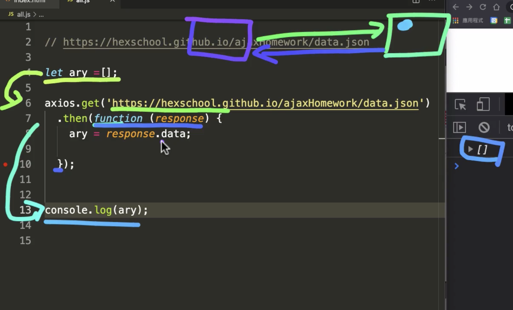

<!DOCTYPE html><html lang="zh-TW"><head><meta charset="UTF-8"><meta name="viewport" content="width=device-width,initial-scale=1,maximum-scale=2"><meta name="theme-color" content="#222"><meta name="generator" content="Hexo 5.4.0"><link rel="apple-touch-icon" sizes="180x180" href="/images/apple-touch-icon-next.png"><link rel="icon" type="image/png" sizes="32x32" href="/images/favicon-32x32-next.png"><link rel="icon" type="image/png" sizes="16x16" href="/images/favicon-16x16-next.png"><link rel="mask-icon" href="/images/logo.svg" color="#222"><link rel="stylesheet" href="/css/main.css"><link rel="stylesheet" href="https://cdn.jsdelivr.net/npm/@fortawesome/fontawesome-free@5.15.3/css/all.min.css" integrity="sha256-2H3fkXt6FEmrReK448mDVGKb3WW2ZZw35gI7vqHOE4Y=" crossorigin="anonymous"><link rel="stylesheet" href="https://cdn.jsdelivr.net/npm/animate.css@3.1.1/animate.min.css" integrity="sha256-PR7ttpcvz8qrF57fur/yAx1qXMFJeJFiA6pSzWi0OIE=" crossorigin="anonymous"><script class="next-config" data-name="main" type="application/json">{&quot;hostname&quot;:&quot;yangtsungjen.github.io&quot;,&quot;root&quot;:&quot;&#x2F;&quot;,&quot;images&quot;:&quot;&#x2F;images&quot;,&quot;scheme&quot;:&quot;Pisces&quot;,&quot;version&quot;:&quot;8.5.0&quot;,&quot;exturl&quot;:false,&quot;sidebar&quot;:{&quot;position&quot;:&quot;left&quot;,&quot;display&quot;:&quot;post&quot;,&quot;padding&quot;:18,&quot;offset&quot;:12},&quot;copycode&quot;:true,&quot;bookmark&quot;:{&quot;enable&quot;:true,&quot;color&quot;:&quot;#222&quot;,&quot;save&quot;:&quot;auto&quot;},&quot;fancybox&quot;:false,&quot;mediumzoom&quot;:false,&quot;lazyload&quot;:false,&quot;pangu&quot;:false,&quot;comments&quot;:{&quot;style&quot;:&quot;tabs&quot;,&quot;active&quot;:null,&quot;storage&quot;:true,&quot;lazyload&quot;:false,&quot;nav&quot;:null},&quot;motion&quot;:{&quot;enable&quot;:true,&quot;async&quot;:false,&quot;transition&quot;:{&quot;post_block&quot;:&quot;fadeIn&quot;,&quot;post_header&quot;:&quot;fadeInDown&quot;,&quot;post_body&quot;:&quot;fadeInDown&quot;,&quot;coll_header&quot;:&quot;fadeInLeft&quot;,&quot;sidebar&quot;:&quot;fadeInUp&quot;}},&quot;prism&quot;:false,&quot;i18n&quot;:{&quot;placeholder&quot;:&quot;搜尋...&quot;,&quot;empty&quot;:&quot;我們無法找到任何有關 ${query} 的搜索結果&quot;,&quot;hits_time&quot;:&quot;${hits} 找到 ${time} 個結果&quot;,&quot;hits&quot;:&quot;找到 ${hits} 個結果&quot;}}</script><script src="/js/config.js"></script><meta name="description" content="網路請求 當使用者向伺服器要資料時，頁面並部會進行重整，只有修改網頁上部分內容（利用ajax撈取資料），類似SPA概念。  XHR 介紹 傳統 Ajax 指的是 XMLHttpRequest（XHR），最早出現的傳送後端請求技術，隸屬於原始js中，核心使用XMLHttpRequest物件，多個請求之間如果有先後關係的話，就會出現回撥地獄。JQuery ajax 是對原生XHR的封裝，除此以外還增添"><meta property="og:type" content="article"><meta property="og:title" content="AJAX 操控伺服器之術"><meta property="og:url" content="https://yangtsungjen.github.io/2021/06/23/javascript/AJAX-%E6%93%8D%E6%8E%A7%E4%BC%BA%E6%9C%8D%E5%99%A8%E4%B9%8B%E8%A1%93/index.html"><meta property="og:site_name" content="洋蔥的筆記札本"><meta property="og:description" content="網路請求 當使用者向伺服器要資料時，頁面並部會進行重整，只有修改網頁上部分內容（利用ajax撈取資料），類似SPA概念。  XHR 介紹 傳統 Ajax 指的是 XMLHttpRequest（XHR），最早出現的傳送後端請求技術，隸屬於原始js中，核心使用XMLHttpRequest物件，多個請求之間如果有先後關係的話，就會出現回撥地獄。JQuery ajax 是對原生XHR的封裝，除此以外還增添"><meta property="og:locale" content="zh_TW"><meta property="og:image" content="https://yangtsungjen.github.io/2021/06/23/javascript/AJAX-%E6%93%8D%E6%8E%A7%E4%BC%BA%E6%9C%8D%E5%99%A8%E4%B9%8B%E8%A1%93/ajax.png"><meta property="article:published_time" content="2021-06-23T05:59:56.000Z"><meta property="article:modified_time" content="2021-06-24T15:12:50.868Z"><meta property="article:author" content="洋蔥"><meta property="article:tag" content="JavaScript"><meta name="twitter:card" content="summary"><meta name="twitter:image" content="https://yangtsungjen.github.io/2021/06/23/javascript/AJAX-%E6%93%8D%E6%8E%A7%E4%BC%BA%E6%9C%8D%E5%99%A8%E4%B9%8B%E8%A1%93/ajax.png"><link rel="canonical" href="https://yangtsungjen.github.io/2021/06/23/javascript/AJAX-%E6%93%8D%E6%8E%A7%E4%BC%BA%E6%9C%8D%E5%99%A8%E4%B9%8B%E8%A1%93/"><script class="next-config" data-name="page" type="application/json">{&quot;sidebar&quot;:&quot;&quot;,&quot;isHome&quot;:false,&quot;isPost&quot;:true,&quot;lang&quot;:&quot;zh-TW&quot;,&quot;comments&quot;:true,&quot;permalink&quot;:&quot;https:&#x2F;&#x2F;yangtsungjen.github.io&#x2F;2021&#x2F;06&#x2F;23&#x2F;javascript&#x2F;AJAX-%E6%93%8D%E6%8E%A7%E4%BC%BA%E6%9C%8D%E5%99%A8%E4%B9%8B%E8%A1%93&#x2F;&quot;,&quot;path&quot;:&quot;2021&#x2F;06&#x2F;23&#x2F;javascript&#x2F;AJAX-操控伺服器之術&#x2F;&quot;,&quot;title&quot;:&quot;AJAX 操控伺服器之術&quot;}</script><script class="next-config" data-name="calendar" type="application/json">&quot;&quot;</script><title>AJAX 操控伺服器之術 | 洋蔥的筆記札本</title><noscript><link rel="stylesheet" href="/css/noscript.css"></noscript></head><body itemscope itemtype="http://schema.org/WebPage" class="use-motion"><div class="headband"></div><main class="main"><header class="header" itemscope itemtype="http://schema.org/WPHeader"><div class="header-inner"><div class="site-brand-container"><div class="site-nav-toggle"><div class="toggle" aria-label="切換導航欄" role="button"><span class="toggle-line"></span> <span class="toggle-line"></span> <span class="toggle-line"></span></div></div><div class="site-meta"><a href="/" class="brand" rel="start"><i class="logo-line"></i><h1 class="site-title">洋蔥的筆記札本</h1><i class="logo-line"></i></a><p class="site-subtitle" itemprop="description">往前邁進</p></div><div class="site-nav-right"><div class="toggle popup-trigger"></div></div></div><nav class="site-nav"><ul class="main-menu menu"><li class="menu-item menu-item-home"><a href="/" rel="section"><i class="fa fa-home fa-fw"></i>首頁</a></li><li class="menu-item menu-item-about"><a href="/about/" rel="section"><i class="fa fa-user fa-fw"></i>關於</a></li><li class="menu-item menu-item-tags"><a href="/tags/" rel="section"><i class="fa fa-tags fa-fw"></i>標籤</a></li><li class="menu-item menu-item-categories"><a href="/categories/" rel="section"><i class="fa fa-th fa-fw"></i>分類</a></li><li class="menu-item menu-item-archives"><a href="/archives/" rel="section"><i class="fa fa-archive fa-fw"></i>歸檔</a></li></ul></nav></div><div class="toggle sidebar-toggle" role="button"><span class="toggle-line"></span> <span class="toggle-line"></span> <span class="toggle-line"></span></div><aside class="sidebar"><div class="sidebar-inner sidebar-nav-active sidebar-toc-active"><ul class="sidebar-nav"><li class="sidebar-nav-toc">文章目錄</li><li class="sidebar-nav-overview">本站概要</li></ul><div class="sidebar-panel-container"><div class="post-toc-wrap sidebar-panel"><div class="post-toc animated"><ol class="nav"><li class="nav-item nav-level-2"><a class="nav-link" href="#%E7%B6%B2%E8%B7%AF%E8%AB%8B%E6%B1%82"><span class="nav-number">1.</span> <span class="nav-text">網路請求</span></a><ol class="nav-child"><li class="nav-item nav-level-3"><a class="nav-link" href="#XHR-%E4%BB%8B%E7%B4%B9"><span class="nav-number">1.1.</span> <span class="nav-text">XHR 介紹</span></a></li><li class="nav-item nav-level-3"><a class="nav-link" href="#axios-%E4%BB%8B%E7%B4%B9"><span class="nav-number">1.2.</span> <span class="nav-text">axios 介紹</span></a></li><li class="nav-item nav-level-3"><a class="nav-link" href="#fetch-%E4%BB%8B%E7%B4%B9"><span class="nav-number">1.3.</span> <span class="nav-text">fetch 介紹</span></a></li></ol></li><li class="nav-item nav-level-2"><a class="nav-link" href="#Ajax-%E9%9D%9E%E5%90%8C%E6%AD%A5%E8%A7%80%E5%BF%B5"><span class="nav-number">2.</span> <span class="nav-text">Ajax 非同步觀念</span></a></li><li class="nav-item nav-level-2"><a class="nav-link" href="#HTTP-%E8%AB%8B%E6%B1%82%E6%96%B9%E6%B3%95"><span class="nav-number">3.</span> <span class="nav-text">HTTP 請求方法</span></a></li><li class="nav-item nav-level-2"><a class="nav-link" href="#%E5%9B%9B%E7%A8%AE%E5%B8%B8%E8%A6%8B%E7%9A%84-POST-%E8%AB%8B%E6%B1%82-content-type-%E4%BB%8B%E7%B4%B9"><span class="nav-number">4.</span> <span class="nav-text">四種常見的 POST 請求 content-type 介紹</span></a></li><li class="nav-item nav-level-2"><a class="nav-link" href="#cors-%E8%99%95%E7%90%86%E6%96%B9%E6%B3%95"><span class="nav-number">5.</span> <span class="nav-text">cors 處理方法</span></a></li><li class="nav-item nav-level-2"><a class="nav-link" href="#%E5%8F%83%E8%80%83%E6%96%87%E4%BB%B6"><span class="nav-number">6.</span> <span class="nav-text">參考文件</span></a></li></ol></div></div><div class="site-overview-wrap sidebar-panel"><div class="site-author site-overview-item animated" itemprop="author" itemscope itemtype="http://schema.org/Person"><p class="site-author-name" itemprop="name">洋蔥</p><div class="site-description" itemprop="description">哪天才能財富自由呢？</div></div><div class="site-state-wrap site-overview-item animated"><nav class="site-state"><div class="site-state-item site-state-posts"><a href="/archives/"><span class="site-state-item-count">26</span> <span class="site-state-item-name">文章</span></a></div><div class="site-state-item site-state-categories"><a href="/categories/"><span class="site-state-item-count">5</span> <span class="site-state-item-name">分類</span></a></div><div class="site-state-item site-state-tags"><a href="/tags/"><span class="site-state-item-count">7</span> <span class="site-state-item-name">標籤</span></a></div></nav></div><div class="links-of-author site-overview-item animated"><span class="links-of-author-item"><a href="https://github.com/YAngTsungJen/YAngTsungJen.github.io" title="GitHub → https:&#x2F;&#x2F;github.com&#x2F;YAngTsungJen&#x2F;YAngTsungJen.github.io" rel="noopener" target="_blank"><i class="fab fa-github fa-fw"></i>GitHub</a> </span><span class="links-of-author-item"><a href="mailto:q23362352@yahoo.com.tw" title="E-Mail → mailto:q23362352@yahoo.com.tw" rel="noopener" target="_blank"><i class="fa fa-envelope fa-fw"></i>E-Mail</a> </span><span class="links-of-author-item"><a href="https://www.facebook.com/profile.php?id=100000289420313" title="FB Page → https:&#x2F;&#x2F;www.facebook.com&#x2F;profile.php?id&#x3D;100000289420313" rel="noopener" target="_blank"><i class="fab fa-facebook fa-fw"></i>FB Page</a> </span><span class="links-of-author-item"><a href="https://instagram.com/q23362352" title="Instagram → https:&#x2F;&#x2F;instagram.com&#x2F;q23362352" rel="noopener" target="_blank"><i class="fab fa-instagram fa-fw"></i>Instagram</a></span></div></div></div></div></aside><div class="sidebar-dimmer"></div></header><div class="back-to-top" role="button" aria-label="回到頂端"><i class="fa fa-arrow-up"></i> <span>0%</span></div><a role="button" class="book-mark-link book-mark-link-fixed"></a><noscript><div class="noscript-warning">Theme NexT works best with JavaScript enabled</div></noscript><div class="main-inner post posts-expand"><div class="post-block"><article itemscope itemtype="http://schema.org/Article" class="post-content" lang="zh-TW"><link itemprop="mainEntityOfPage" href="https://yangtsungjen.github.io/2021/06/23/javascript/AJAX-%E6%93%8D%E6%8E%A7%E4%BC%BA%E6%9C%8D%E5%99%A8%E4%B9%8B%E8%A1%93/"><span hidden itemprop="author" itemscope itemtype="http://schema.org/Person"><meta itemprop="image" content="/about/girlWakeUp.gif"><meta itemprop="name" content="洋蔥"><meta itemprop="description" content="哪天才能財富自由呢？"></span><span hidden itemprop="publisher" itemscope itemtype="http://schema.org/Organization"><meta itemprop="name" content="洋蔥的筆記札本"></span><header class="post-header"><h1 class="post-title" itemprop="name headline">AJAX 操控伺服器之術</h1><div class="post-meta-container"><div class="post-meta"><span class="post-meta-item"><span class="post-meta-item-icon"><i class="far fa-calendar"></i> </span><span class="post-meta-item-text">發表於</span> <time title="創建時間：2021-06-23 13:59:56" itemprop="dateCreated datePublished" datetime="2021-06-23T13:59:56+08:00">2021-06-23</time> </span><span class="post-meta-item"><span class="post-meta-item-icon"><i class="far fa-calendar-check"></i> </span><span class="post-meta-item-text">更新於</span> <time title="修改時間：2021-06-24 23:12:50" itemprop="dateModified" datetime="2021-06-24T23:12:50+08:00">2021-06-24</time> </span><span class="post-meta-item"><span class="post-meta-item-icon"><i class="far fa-folder"></i> </span><span class="post-meta-item-text">分類於</span> <span itemprop="about" itemscope itemtype="http://schema.org/Thing"><a href="/categories/JavaScript/" itemprop="url" rel="index"><span itemprop="name">JavaScript</span></a> </span></span><span class="post-meta-item"><span class="post-meta-item-icon"><i class="far fa-comment"></i> </span><span class="post-meta-item-text">Disqus：</span> <a title="disqus" href="/2021/06/23/javascript/AJAX-%E6%93%8D%E6%8E%A7%E4%BC%BA%E6%9C%8D%E5%99%A8%E4%B9%8B%E8%A1%93/#disqus_thread" itemprop="discussionUrl"><span class="post-comments-count disqus-comment-count" data-disqus-identifier="2021/06/23/javascript/AJAX-操控伺服器之術/" itemprop="commentCount"></span></a></span></div><div class="post-meta"><span class="post-meta-item" title="文章字數"><span class="post-meta-item-icon"><i class="far fa-file-word"></i> </span><span class="post-meta-item-text">文章字數：</span> <span>2.6k</span> </span><span class="post-meta-item" title="所需閱讀時間"><span class="post-meta-item-icon"><i class="far fa-clock"></i> </span><span class="post-meta-item-text">所需閱讀時間 &asymp;</span> <span>2 分鐘</span></span></div></div></header><div class="post-body" itemprop="articleBody"><h2 id="網路請求"><a href="#網路請求" class="headerlink" title="網路請求"></a>網路請求</h2><ul><li>當使用者向伺服器要資料時，頁面並部會進行重整，只有修改網頁上部分內容（利用ajax撈取資料），類似SPA概念。</li></ul><h3 id="XHR-介紹"><a href="#XHR-介紹" class="headerlink" title="XHR 介紹"></a>XHR 介紹</h3><ul><li>傳統 Ajax 指的是 XMLHttpRequest（XHR），最早出現的傳送後端請求技術，隸屬於原始js中，核心使用XMLHttpRequest物件，多個請求之間如果有先後關係的話，就會出現回撥地獄。JQuery ajax 是對原生XHR的封裝，除此以外還增添了對JSONP的支援。經過多年的更新維護，真的已經是非常的方便了。<span id="more"></span></li><li>但有以下缺點：<ul><li>本身是針對MVC的程式設計,不符合現在前端MVVM的浪潮</li><li>基於原生的XHR開發，XHR本身的架構不清晰。</li><li>JQuery整個專案太大，單純使用ajax卻要引入整個JQuery非常的不合理（採取個性化打包的方案又不能享受CDN服務）</li><li>不符合關注分離（Separation of Concerns）的原則</li><li>配置和呼叫方式非常混亂，而且基於事件的非同步模型不友好。</li></ul></li></ul><h3 id="axios-介紹"><a href="#axios-介紹" class="headerlink" title="axios 介紹"></a>axios 介紹</h3><ul><li>套件</li></ul><figure class="highlight javascript"><table><tr><td class="gutter"><pre><span class="line">1</span><br></pre></td><td class="code"><pre><span class="line">&lt;script src=<span class="string">&quot;https://cdn.jsdelivr.net/npm/axios/dist/axios.min.js&quot;</span>&gt;&lt;/script&gt;</span><br></pre></td></tr></table></figure><figure class="highlight javascript"><table><tr><td class="gutter"><pre><span class="line">1</span><br><span class="line">2</span><br><span class="line">3</span><br><span class="line">4</span><br><span class="line">5</span><br><span class="line">6</span><br><span class="line">7</span><br><span class="line">8</span><br><span class="line">9</span><br></pre></td><td class="code"><pre><span class="line"><span class="keyword">let</span> list = <span class="built_in">document</span>.querySelector(<span class="string">&#x27;.list&#x27;</span>);</span><br><span class="line"><span class="keyword">let</span> url = <span class="string">`https://hexschool.github.io/ajaxHomework/data.json`</span>;</span><br><span class="line">axios.get(url).then(<span class="function">(<span class="params">res</span>) =&gt;</span> &#123;</span><br><span class="line">    <span class="keyword">let</span> data = res.data[<span class="number">0</span>].name;</span><br><span class="line">    list.textContent = data;</span><br><span class="line">&#125;)</span><br><span class="line">.catch(<span class="function"><span class="params">error</span> =&gt;</span> &#123;</span><br><span class="line">    <span class="built_in">console</span>.log(error);</span><br><span class="line">&#125;)</span><br></pre></td></tr></table></figure><ul><li>Vue2.0之後，推薦大家用axios替換JQuery ajax，想必讓axios進入了很多人的目光中。axios 是一個基於Promise 用於瀏覽器和 nodejs 的 HTTP 客戶端，本質上也是對原生XHR的封裝，只不過它是Promise的實現版本，符合最新的ES規範，它本身具有以下特徵<ul><li>從瀏覽器中建立 XMLHttpRequest</li><li>支援 Promise API</li><li>客戶端支援防止CSRF</li><li>提供了一些併發請求的介面（重要，方便了很多的操作）</li><li>從 node.js 建立 http 請求</li><li>攔截請求和響應</li><li>轉換請求和響應資料</li><li>取消請求</li><li>自動轉換JSON資料</li></ul></li></ul><blockquote><p>注意：防止CSRF:就是讓你的每個請求都帶一個從cookie中拿到的key, 根據瀏覽器同源策略，假冒的網站是拿不到你cookie中得key的，這樣，後臺就可以輕鬆辨別出這個請求是否是使用者在假冒網站上的誤導輸入，從而採取正確的策略。</p></blockquote><figure class="highlight javascript"><table><tr><td class="gutter"><pre><span class="line">1</span><br><span class="line">2</span><br><span class="line">3</span><br><span class="line">4</span><br><span class="line">5</span><br><span class="line">6</span><br><span class="line">7</span><br><span class="line">8</span><br><span class="line">9</span><br><span class="line">10</span><br><span class="line">11</span><br></pre></td><td class="code"><pre><span class="line">axios(&#123;</span><br><span class="line">    method: <span class="string">&#x27;post&#x27;</span>,</span><br><span class="line">    url: <span class="string">&#x27;/user/1&#x27;</span>,</span><br><span class="line">    data: &#123;&#125;</span><br><span class="line">&#125;)</span><br><span class="line">.then(<span class="function"><span class="params">response</span> =&gt;</span> &#123;</span><br><span class="line">    <span class="built_in">console</span>.log(response);</span><br><span class="line">&#125;)</span><br><span class="line">.catch(<span class="function"><span class="params">error</span> =&gt;</span> &#123;</span><br><span class="line">    <span class="built_in">console</span>.log(error);</span><br><span class="line">&#125;);</span><br></pre></td></tr></table></figure><h3 id="fetch-介紹"><a href="#fetch-介紹" class="headerlink" title="fetch 介紹"></a>fetch 介紹</h3><figure class="highlight javascript"><table><tr><td class="gutter"><pre><span class="line">1</span><br><span class="line">2</span><br><span class="line">3</span><br><span class="line">4</span><br><span class="line">5</span><br><span class="line">6</span><br><span class="line">7</span><br><span class="line">8</span><br><span class="line">9</span><br><span class="line">10</span><br></pre></td><td class="code"><pre><span class="line"><span class="keyword">let</span> list = <span class="built_in">document</span>.querySelector(<span class="string">&#x27;.list&#x27;</span>);</span><br><span class="line"><span class="keyword">let</span> url = <span class="string">`https://hexschool.github.io/ajaxHomework/data.json`</span>;</span><br><span class="line">fetch(url)</span><br><span class="line">.then(<span class="function"><span class="params">res</span> =&gt;</span> &#123;</span><br><span class="line">    <span class="keyword">return</span> res.json();</span><br><span class="line">&#125;)</span><br><span class="line">.then(<span class="function"><span class="params">myJson</span> =&gt;</span>&#123;</span><br><span class="line">    <span class="comment">// console.log(myJson[0].name);</span></span><br><span class="line">    list.textContent = myJson[<span class="number">0</span>].name;</span><br><span class="line">&#125;);</span><br></pre></td></tr></table></figure><ul><li>fetch號稱是AJAX的替代品，是在ES6出現的，使用了ES6中的promise物件。Fetch是基於promise設計的。Fetch的程式碼結構比起ajax簡單多了，引數有點像jQuery ajax。但是，一定記住fetch不是ajax的進一步封裝，而是原生js，沒有使用XMLHttpRequest物件。 fetch的優點：<ul><li>符合關注分離，沒有將輸入、輸出和用事件來跟蹤的狀態混雜在一個物件裡</li><li>更好更方便的寫法 坦白說，上面的理由對我來說完全沒有什麼說服力，因為不管是Jquery還是Axios都已經幫我們把xhr封裝的足夠好，使用起來也足夠方便，為什麼我們還要花費大力氣去學習fetch？我認為fetch的優勢主要優勢就是：</li><li>語法簡潔，更加語義化</li><li>基於標準 Promise 實現，支援 async/await</li><li>重構方便，使用 isomorphic-fetch<br>- 更加底層，提供的API豐富（request, response）</li><li>脫離了XHR，是ES規範裡新的實現方式 最近在使用fetch的時候，也遇到了不少的問題：fetch是一個低層次的API，你可以把它考慮成原生的XHR，所以使用起來並不是那麼舒服，需要進行封裝。例如：</li><li>fetch只對網路請求報錯，對400，500都當做成功的請求，伺服器返回 400，500 錯誤碼時並不會 reject，只有網路錯誤這些導致請求不能完成時，fetch 才會被 reject。</li><li>fetch預設不會帶cookie，需要新增配置項： fetch(url, {credentials: ‘include’})</li><li>fetch不支援abort，不支援超時控制，使用setTimeout及Promise.reject的實現的超時控制並不能阻止請求過程繼續在後臺執行，造成了流量的浪費</li><li>fetch沒有辦法原生監測請求的進度，而XHR可以</li></ul></li></ul><h2 id="Ajax-非同步觀念"><a href="#Ajax-非同步觀念" class="headerlink" title="Ajax 非同步觀念"></a>Ajax 非同步觀念</h2><p></p><h2 id="HTTP-請求方法"><a href="#HTTP-請求方法" class="headerlink" title="HTTP 請求方法"></a>HTTP 請求方法</h2><ol><li>get</li><li>post<ul><li>與 get 差別在於，可以傳送資料給對方，可以傳送帳號密碼到伺服器，對方會回傳我 state 200</li></ul></li><li>delete</li></ol><h2 id="四種常見的-POST-請求-content-type-介紹"><a href="#四種常見的-POST-請求-content-type-介紹" class="headerlink" title="四種常見的 POST 請求 content-type 介紹"></a>四種常見的 POST 請求 content-type 介紹</h2><ol><li>application/x-www-form-urlencoded</li><li>application/json</li><li>multipart/form-data</li><li>text/plain</li></ol><h2 id="cors-處理方法"><a href="#cors-處理方法" class="headerlink" title="cors 處理方法"></a>cors 處理方法</h2><ul><li>前面帶入：<br><code>https://cors-anywhere.herokuapp.com/</code></li></ul><h2 id="參考文件"><a href="#參考文件" class="headerlink" title="參考文件"></a>參考文件</h2><p><a target="_blank" rel="noopener" href="https://www.796t.com/article.php?id=253572">文件</a></p></div><footer class="post-footer"><div><div><h4><i class="fas fa-heart"></i> Liker 讚賞 (拍手)</h4><p>如果這一篇筆記文章對你有幫助，希望可以求點<del>牡蠣</del> <ins>鼓勵</ins> (ノД`)・゜・。</p></div><div style="height:212px;width:100%"><script type="text/javascript">document.write("<iframe scrolling='no' frameborder='0' sandbox='allow-scripts allow-same-origin allow-popups allow-popups-to-escape-sandbox allow-storage-access-by-user-activation' style='height: 212px; width: 100%;' src='https://button.like.co/in/embed/q23362352/button?referrer="+encodeURIComponent(location.href.split("?")[0].split("#")[0])+"'></iframe>")</script></div><small>Liker 是一個按讚(拍手)的讚賞機制，每一篇文章最多可以按五下拍手，過程你只需要登入，如果你願意按個讚，對於創作者來講是一個莫大的鼓勵與支持。</small></div><div class="post-tags"><a href="/tags/JavaScript/" rel="tag"># JavaScript</a></div><div class="post-widgets"><div class="wp_rating"><div id="wpac-rating"></div></div></div><div class="post-nav"><div class="post-nav-item"><a href="/2021/06/23/javascript/DOM-Event-%E4%BA%8B%E4%BB%B6%E8%99%95%E7%90%86/" rel="prev" title="DOM Event 事件處理"><i class="fa fa-chevron-left"></i> DOM Event 事件處理</a></div><div class="post-nav-item"><a href="/2021/06/23/javascript/%E5%8F%96%E5%BE%97html-%E5%B1%AC%E6%80%A7%E7%9A%84%E5%80%BC%E5%8F%8A%E6%96%B0%E5%A2%9E%E5%B1%AC%E6%80%A7/" rel="next" title="取得html 屬性的值及新增屬性">取得html 屬性的值及新增屬性 <i class="fa fa-chevron-right"></i></a></div></div></footer></article></div><div class="comments" id="disqus_thread"><noscript>Please enable JavaScript to view the comments powered by Disqus.</noscript></div></div></main><footer class="footer"><div class="footer-inner"><div class="copyright">&copy; <span itemprop="copyrightYear">2021</span> <span class="with-love"><i class="fab fa-angellist"></i> </span><span class="author" itemprop="copyrightHolder">若要轉載文章，麻煩請保留原作者名稱與原始連結。</span></div><div class="wordcount"><span class="post-meta-item"><span class="post-meta-item-icon"><i class="fa fa-chart-line"></i> </span><span title="總字數">47k</span> </span><span class="post-meta-item"><span class="post-meta-item-icon"><i class="fa fa-coffee"></i> </span><span title="所需總閱讀時間">43 分鐘</span></span></div><div class="addthis_inline_share_toolbox"><script src="//s7.addthis.com/js/300/addthis_widget.js#pubid=60ca1d8cbd741ab9" async></script></div></div></footer><script src="https://cdn.jsdelivr.net/npm/animejs@3.2.1/lib/anime.min.js" integrity="sha256-XL2inqUJaslATFnHdJOi9GfQ60on8Wx1C2H8DYiN1xY=" crossorigin="anonymous"></script><script src="/js/comments.js"></script><script src="/js/utils.js"></script><script src="/js/motion.js"></script><script src="/js/next-boot.js"></script><script src="/js/bookmark.js"></script><script src="https://embed.widgetpack.com/widget.js" async></script><script class="next-config" data-name="rating" type="application/json">{&quot;enable&quot;:true,&quot;id&quot;:30985,&quot;color&quot;:&quot;#fc6423&quot;}</script><script src="/js/third-party/rating.js"></script><script class="next-config" data-name="disqus" type="application/json">{&quot;enable&quot;:true,&quot;shortname&quot;:&quot;yangtsungjen&quot;,&quot;count&quot;:true,&quot;i18n&quot;:{&quot;disqus&quot;:&quot;disqus&quot;}}</script><script src="/js/third-party/comments/disqus.js"></script></body></html>